01
誰が執刀するか
オールオン4は「埋める技術」と同じくらい、噛み合わせを設計する技術が結果を左右します。当院の手術はすべて、インプラント（外科）と補綴（噛み合わせ・被せ物）の両分野の専門医資格を持つ丸尾が執刀します。
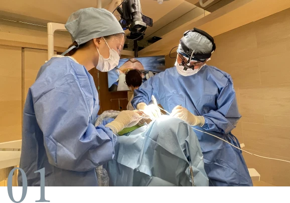
東京・恵比寿／三軒茶屋｜オールオン4 専門ページ
4本のインプラントで、失った歯をすべて支える「オールオン4」。抜歯・インプラント埋入・固定式の仮歯の装着まで、手術当日に行います。執刀は、インプラントと補綴（噛み合わせ・被せ物）の両分野で専門医資格を持つ丸尾勝一郎が、すべて担当します。
※埋入本数は2025年、患者数・骨造成件数は2024年の当院実績です。
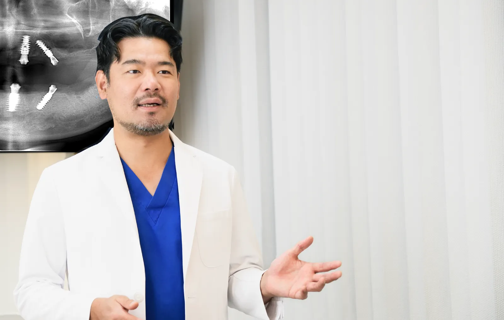
CHECK
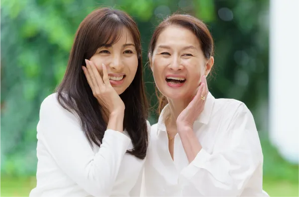
ひとつでも当てはまる方は、治療を決める前の「相談だけ」で構いません。60分の初診で、お口全体の状態と選択肢をお伝えします。
ONE-DAY TREATMENT
オールオン4は、4本（状態によって6本）のインプラントで12本分の固定式の歯を支える治療法です。当院では抜歯したその日に、インプラントの埋入から固定式の仮歯の装着までを行います（抜歯即時埋入・即時荷重）。「入れ歯で過ごす期間」をつくりません。
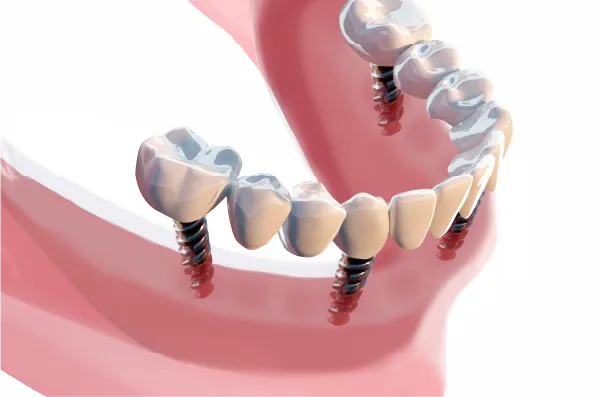
「治療後」の写真は最終的な歯を装着したあとの状態です。手術当日に装着するのは仮歯で、しっかり噛めるようになるのはインプラントと骨が結合する約2〜3ヶ月後からです。
ただし同じ「オールオン4」でも、どこで受けるかで10年後は大きく変わります。↓
WHY THE PRICE GAP
100万円台の広告も、400万円を超える見積りも、どちらも実在します。差の正体は、主に次の4つです。
01
オールオン4は「埋める技術」と同じくらい、噛み合わせを設計する技術が結果を左右します。当院の手術はすべて、インプラント（外科）と補綴（噛み合わせ・被せ物）の両分野の専門医資格を持つ丸尾が執刀します。

02
世界的に普及しているインプラントブランドと廉価なインプラントでは、長期の臨床データも、10年後の部品供給体制も違います。上に載せる歯も、ジルコニアかプラスチックかで耐久性が大きく変わります。
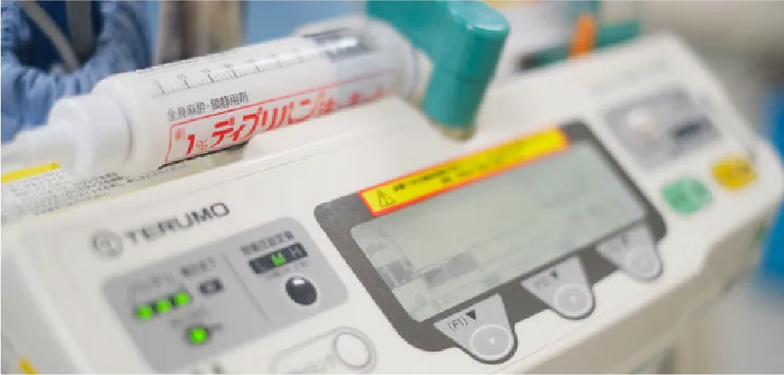
03
当院のオールオン4は全例、歯科麻酔を専門とする歯科医師（日本歯科麻酔学会 認定医）が担当する静脈内鎮静法で行います。点滴の麻酔で、眠っているような状態のまま手術が終わります。手術中は血圧計・心電図などの生体情報モニタで全身状態を管理し、持病のある方はかかりつけ医と連携したうえで手術の可否を判断します。
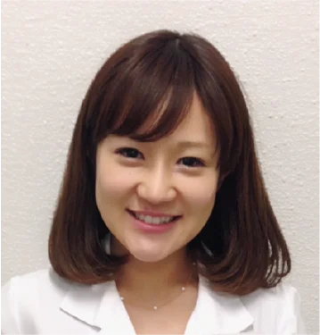
04
治療費には、治療後10年の保証とメンテナンス体制が含まれています。保証のない安さは、数年後の作り替え費用で逆転することがあります。
「日本の歯科治療はやり直しが多く、少しずつ歯が悪くなっていき、最終的に入れ歯になってしまうことを目の当たりにし、やるせない気持ちになりました。私は帰国後、できるだけ"長持ちする治療"をすることを心がけ、そのためには患者さんに治療の選択肢をしっかりと説明し、患者さんご自身に選択していただくことに注力しました。」
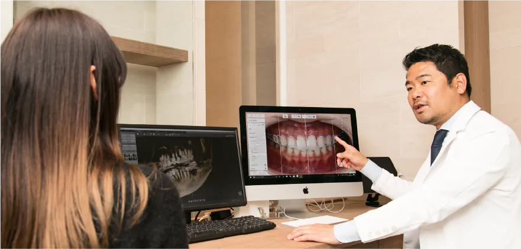
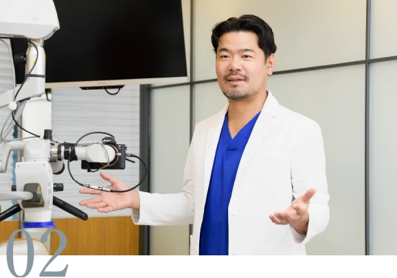
SECOND OPINION
「この見積りは適正か」「本当にオールオン4が必要か」「抜歯と言われたが残せないのか」。契約前のセカンドオピニオンとしてのご相談を受け付けています。大学病院で難症例・再治療を診てきた立場から、率直にお答えします。無理に当院での治療をおすすめすることはありません。
もし、少しでも不安を感じる場合は、積極的に専門医によるセカンドオピニオンを活用してください。セカンドオピニオンを受けることは患者さんの権利でもあります。（院長）
かかりつけ医の許可は必要ありません。他院で治療途中の方、他のメーカーのインプラントが入っている方のご相談も承ります。
DOCTOR
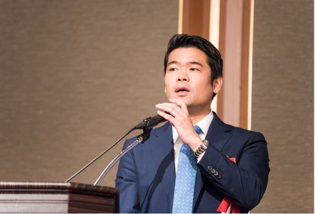
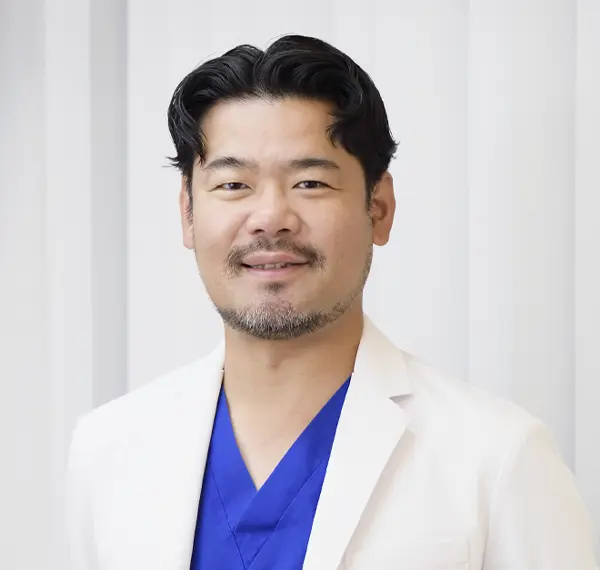
三軒茶屋・恵比寿マルオ歯科 統括院長／神奈川歯科大学 特任准教授（補綴・インプラント学）／東京医科歯科大学 インプラント外来 非常勤講師
資格（正式名称）
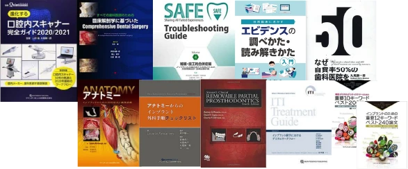
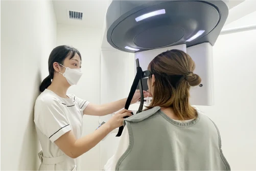
全症例でデジタルシミュレーション（ストローマン社 coDiagnostiX）を行い、必要に応じてサージカルガイドを使用
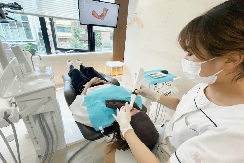
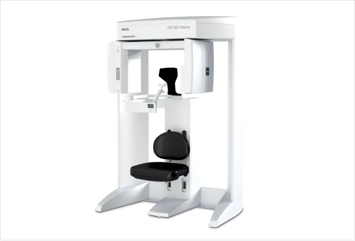
低被曝の歯科用CT（コンビームCT）と口腔内スキャナー（3Shape TRIOS）で、型取りの不快感を減らす
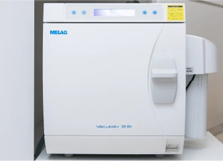
クラスB滅菌器2台。縫合針・ガウン・トレーなどはディスポーザブル
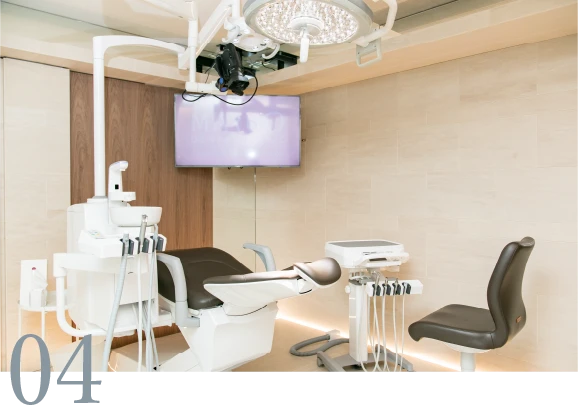
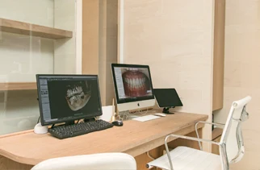
恵比寿院はインプラント手術専用のオペ室と個室のカウンセリングルーム【要確認: 三軒茶屋院のオペ室】
東京医科歯科大学と同大学院（インプラント学専攻）を修了後、岩手医科大学にインプラント外来医局長として赴任。世界20名の選抜枠でITIスカラーに選ばれ、ハーバード大学歯学部インプラント科で German Gallucci 教授に師事。帰国後は神奈川歯科大学で研究・教育・臨床に従事し、2018年に三軒茶屋マルオ歯科、2021年に恵比寿マルオ歯科を開院。現在も大学で歯科医師を教えながら、全国の歯科医院から依頼を受けて出張オペを行っています。【要確認: 世界20名選抜の年・制度名】
経歴タイムライン
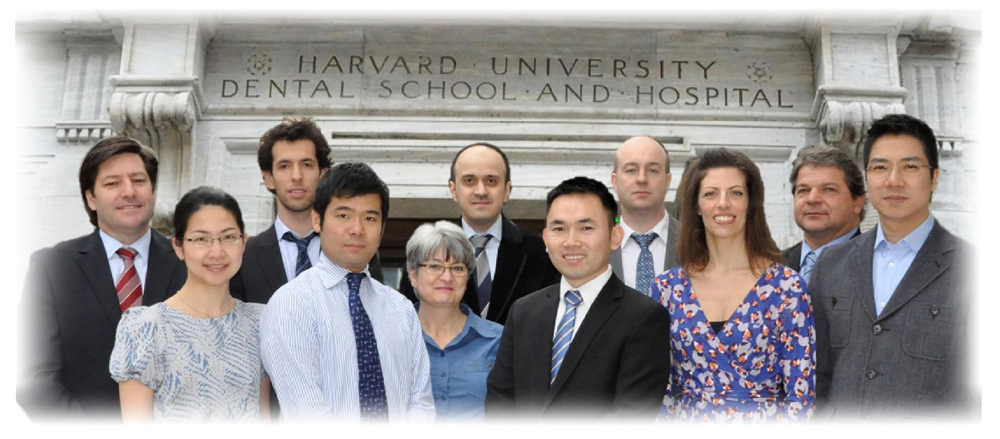
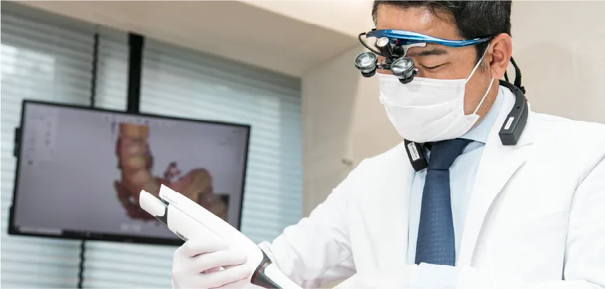
1.
初診は検査30分＋カウンセリング30分の60分。歯のない部分だけでなく、残っている歯の状態まで精査します。ご希望の方には、院長が考案した「トップダウントリートメントデザイン®」で、まず理想の治療計画を描き、そこから費用・期間の制約を踏まえた現実的な計画を一緒に決めていきます。
2.
治療費の総額と期間は、カウンセリング当日に書面でお渡しします。あとから追加が出る見積りはしません。
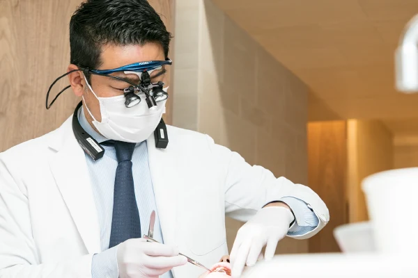
3.
カウンセリングから手術、最終的な歯の装着まで、院長が一貫して担当します。手術を担当する技術と同じくらい、その後の噛み合わせの調整がインプラントの寿命を左右するからです。
CASES
掲載している写真はすべて当院で治療した患者さんのものです。治療結果には個人差があります。年齢・性別・主訴は【要確認】。
CASE 01
CASE 02
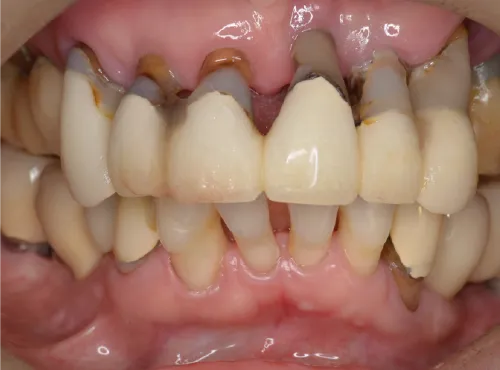
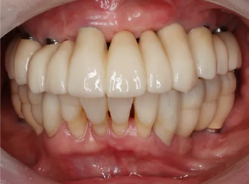
CASE 03
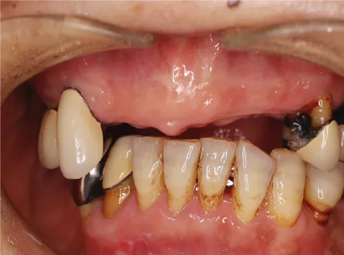
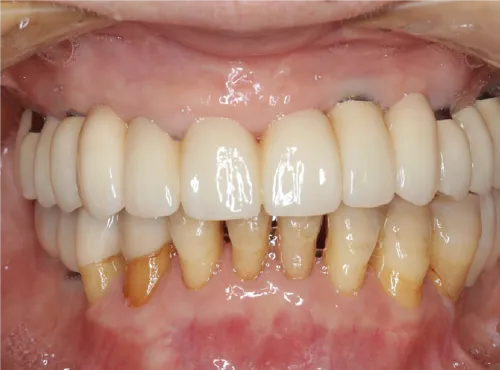
CASE 04
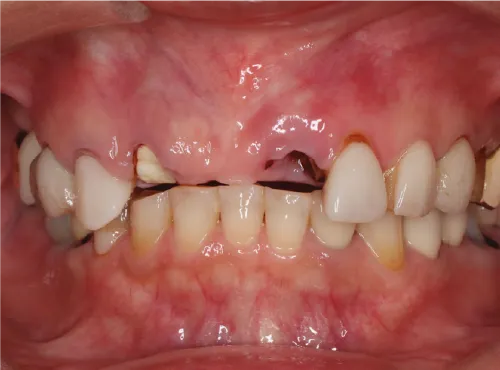
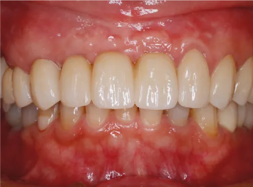
CASE 05
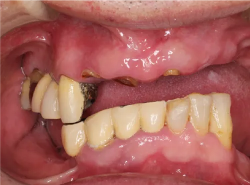
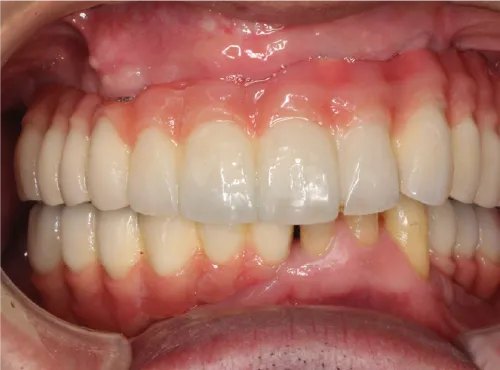
他院で治療したインプラントの再治療・トラブルのご相談も承っています。
REASONS
大学病院のインプラント外来で難症例・他院トラブルを診てきた専門医が全例執刀
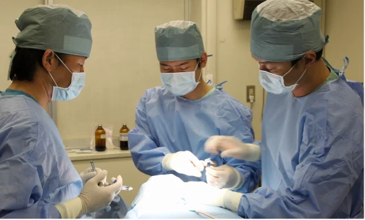
歯科麻酔を専門とする歯科医師（日本歯科麻酔学会 認定医）による静脈内鎮静法。眠っているような状態のまま手術が終わります
抜歯・埋入・固定式の仮歯まで手術当日に。入れ歯で過ごす期間をつくりません
治療完了日から10年の保証。定期メンテナンスに通っていれば無償で対応
骨が少なく他院で断られた方も、骨造成（年間180件）で手術できる可能性があります
FLOW
検査30分＋カウンセリング30分。CT撮影と分析のうえ、治療計画と費用・期間を書面でお渡しします。
抜歯・インプラント埋入・固定式の仮歯の装着を当日に行います。静脈内鎮静法で、眠っているような状態のまま終わります。
手術の約2週間後。
インプラントと骨が結合するまで（約2ヶ月）、噛み合わせを整えます。
手術から約3ヶ月後にジルコニアの歯の型取りを行い、約4ヶ月で治療が完了します（骨造成の有無や仮歯の調整で前後します）。
3ヶ月に1度を目安に、インプラントのトレーニングを受けた歯科衛生士がケアします。10年保証の条件です。
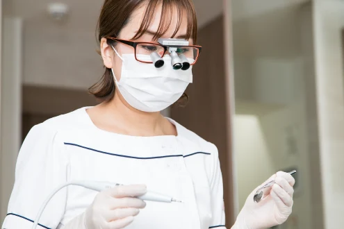
| 10:00 | 来院・お会計 |
|---|---|
| 10:10 | お口の中のクリーニング |
| 10:30 | 静脈内鎮静法 開始 |
| 10:45 | 抜歯・インプラント埋入 |
| 12:00 | 仮歯の調整・装着 |
| 14:30 | レントゲン確認・術後の説明 |
| 15:00 | ご帰宅 |
※麻酔の影響でぼんやりすることがあるため、お会計は術前にお済ませいただきます。※食事は手術6時間前まで、水分は2時間前まで。当日は車・バイク・自転車でのご来院はできません。
術後5〜7日程度、腫れや痛み、内出血が出ることがあります。術後2週間〜1ヶ月は柔らかい食事をおすすめします。
PRICE
すべて自由診療（税込）です。当院のおすすめは、10年保証とジルコニアの歯がつく「プラチナ」「ダイヤモンド」です。
| プラン | 費用 | インプラント | 歯の材質 | 保証 | 月額目安 |
|---|---|---|---|---|---|
| プラチナおすすめ | 365万円 | ストローマン（スイス） | 最高品質ジルコニア | 保証10年 | 月々 約◯◯円〜（◯回払い）【要確認: デンタルローンの取扱い・回数・金利】 |
| シルバー | 312万円 | NEODENT（ストローマングループ） | 高品質ジルコニア | 保証5年 | 月々 約◯◯円〜（◯回払い）【要確認: デンタルローンの取扱い・回数・金利】 |
| アイアン | 198万円 | NEODENT（ストローマングループ） | 高強度プラスチック | 保証なし | 月々 約◯◯円〜（◯回払い）【要確認: デンタルローンの取扱い・回数・金利】 |
| プラン | 費用 | インプラント | 歯の材質 | 保証 | 月額目安 |
|---|---|---|---|---|---|
| ダイヤモンドおすすめ | 448万円 | ストローマン（スイス） | 最高品質ジルコニア | 保証10年 | 月々 約◯◯円〜（◯回払い）【要確認: デンタルローンの取扱い・回数・金利】 |
| ゴールド | 369万円 | NEODENT（ストローマングループ） | 高品質ジルコニア | 保証5年 | 月々 約◯◯円〜（◯回払い）【要確認: デンタルローンの取扱い・回数・金利】 |
| ブロンズ | 264万円 | NEODENT（ストローマングループ） | 高強度プラスチック | 保証なし | 月々 約◯◯円〜（◯回払い）【要確認: デンタルローンの取扱い・回数・金利】 |
ブロンズ・アイアンプランは2〜3年で上部構造（歯の部分）の作り替えが必要になり、その際は別途、片顎ジルコニア110万円（税込）またはプラスチック33万円（税込）がかかります。
費用には、静脈内鎮静法（通常110,000円）と仮歯が含まれます。【要確認: CT・検査・最終的な歯・再診料の扱い】
お支払いは現金、クレジットカード（VISA／Master／JCB／AMEX／Diners）、デンタルローンをご利用いただけます。医療費控除の対象になります。【要確認: デンタルローンの提携先・月額例】
すべてのインプラント治療に10年保証（喫煙者は5年保証）が付き、トラブルの際は当院の負担でやり直しや修理を行います。保証は当院が推奨する定期メンテナンスを受けている方が対象です。
SAFETY
高血圧・心疾患・糖尿病・喘息などの持病がある方は、事前に全身管理の問診を行い、必要に応じて内科の主治医に照会したうえで手術の可否と方法を判断します。お薬手帳をお持ちください。
年齢の上限は設けていません。全身状態と骨の状態で判断します。【要確認: 高齢の方の実績】
骨造成（骨を増やす手術）を年間180件行っています。他院で断られた方も、手術できる可能性があります。
手術時間が2時間前後になるため、重度の全身疾患をお持ちの方は手術を受けられない可能性があります。蓄膿症や鼻炎がある方は、手術前に耳鼻科の診察が必要になることがあります。
FAQ
主な違いは「執刀医の専門性」「インプラント体と歯の材質」「麻酔と安全管理」「保証」の4点です。他院のお見積りをお持ちいただいてのご相談も歓迎です。
静脈内鎮静法で眠っている間に行うため、手術中の痛みや記憶はほとんど残りません。術後の腫れや痛みは処方する鎮痛剤で対応します。
手術当日に固定式の仮歯が入り、見た目は当日に回復します。しっかり噛めるのは、インプラントと骨が結合する約2〜3ヶ月後からです。最終的なジルコニアの歯は約3〜4ヶ月後に装着します。
手術当日に仮歯が入り、約3ヶ月後に最終的な歯の型取り、約4ヶ月で治療が完了します（骨造成の有無や仮歯の調整で前後します）。通院は初診、手術、抜糸、仮歯調整、最終的な歯の型取り〜装着で5〜7回が目安です。
高血圧・糖尿病・心疾患などがある方も、かかりつけ医と連携して可否を判断します。お薬手帳をお持ちください。
年齢の上限は設けていません。全身状態と骨の状態で判断します。
骨造成で手術できる可能性があります。当院では骨造成手術を年間180件行っています。CTで確認のうえご説明します。
現金、クレジットカード（VISA／Master／JCB／AMEX／Diners）、デンタルローンをご利用いただけます。医療費控除の対象になります。
デスクワークであれば翌日から可能です。人前で話す仕事や体に負荷のかかる仕事は、2週間以降の再開をおすすめしています。
適切なケアと定期的なメンテナンスで長期の使用が見込めます。上部構造（歯の部分）は素材とお口の状態により10〜15年程度が目安です。当院は10年保証（喫煙者は5年）で対応します。
日帰りです。静脈内鎮静法のあと2〜3時間ほど院内で休んでからお帰りいただきます。当日は車・バイク・自転車でのご来院はできません。
片顎で60〜120分程度です。抜歯・埋入・仮歯の装着を含め、来院から帰宅まで約5時間を予定しています。
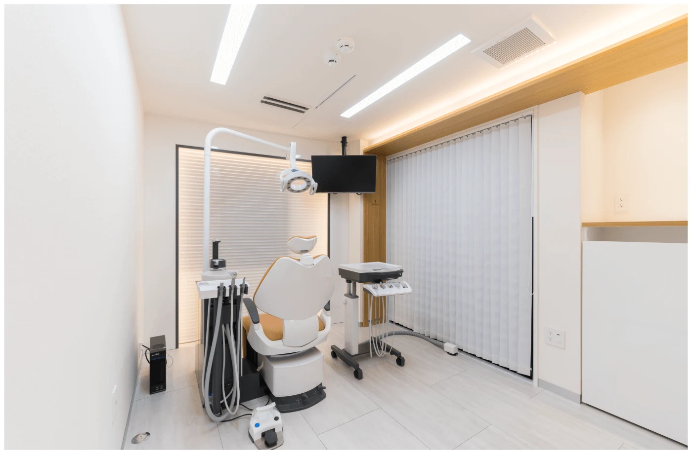
治療を決めていなくて構いません。60分の初診で、お口全体の状態・選べる治療・費用と期間を書面でお伝えします。他院のお見積りもお持ちください。
【要確認: LINE公式アカウントURL】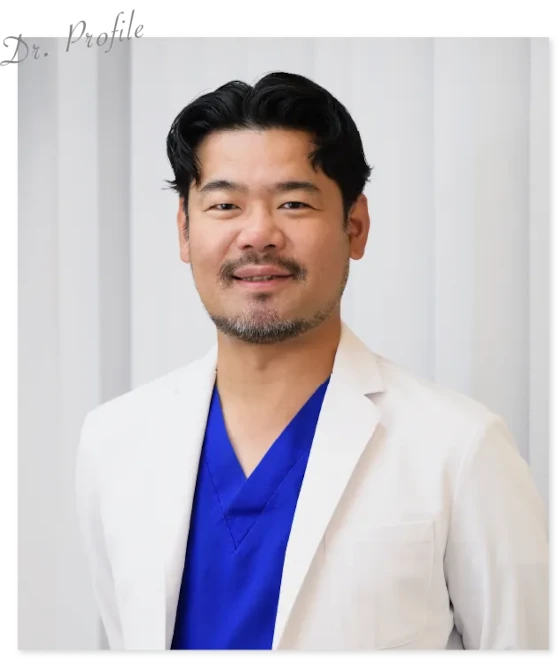